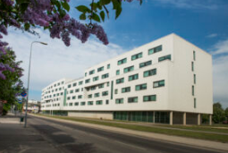
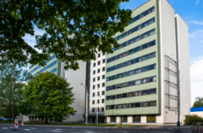
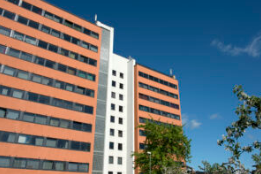
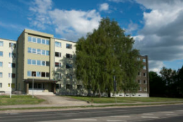
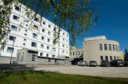
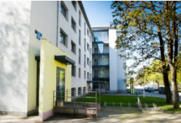

Tartu ülikooli ühikad
See lehekülg tutvustab Tartu ülikooli ühiselamuid. TÜ endal on 7 ühikat ning hetkel on renoveerimisel ka kaheksas.
Raatuse 22
- 
- Kahe- ja kolmetoalised korterid, jagatud köök, duširuum ja WC
- Tasuline parka
- Vastab liikumispuudega tudengite vajadustele
- Lift
- Ülikooli peahoone 900m kaugusel
Narva mnt 25
- 
- Kahetoalised, kus on 1 ja 2-kohalised toad, jagatud köök, duširuum ja WC
- Väike parkla
- Lift
- Ülikooli peahoone 750m kaugusel
Narva mnt 27
- 
- Kahetoalised korterid, kus on 2-kohalised toad, jagatud köök, duširuum ja WC
- Väike parkla
- Lift
- Ülikooli peahoone 850m kaugusel
Narva mnt 89
- 
- Kahetoalised toad, külmkapid tubades. Igal korrusel ühine köök, duširuumid meestele ja naistele, ühine WC
- Puhkeruum koos lauatennise lauaga ja spordiruum
- Üle tee asub õppehoone Delta
Purde 27
- 
- 1-, 2- ja 3-toalised korterid, kus on 1- ja 2-kohalised toad
- Renoveerimata elamu osas vannid, renoveeritud osas duširuumid, korterites jagatud köök ja WC
- Ülikooli peahoone asub 2.6km kaugusel
Pepleri 14

- Kortertüüpi tubadel ja stuudiokorteritel privaatne köök, duširuum ja WC, stuudiokorteris lahtikäiv diivanvoodi
- Korterisüsteemis toad jagavad kööki, duširuumi ja WC'd
- Lift
- Ülikooli peahoone asub 1km kaugusel
Tiigi 14
- 
- 2- ja 3-toalised korterid, kus on 1- ja 2-kohalised toad, jagatud köök, duširuum ja WC
- Ülikooli peahoone asub 1,1km kaugusel
Nooruse 7 - renoveerimisel!